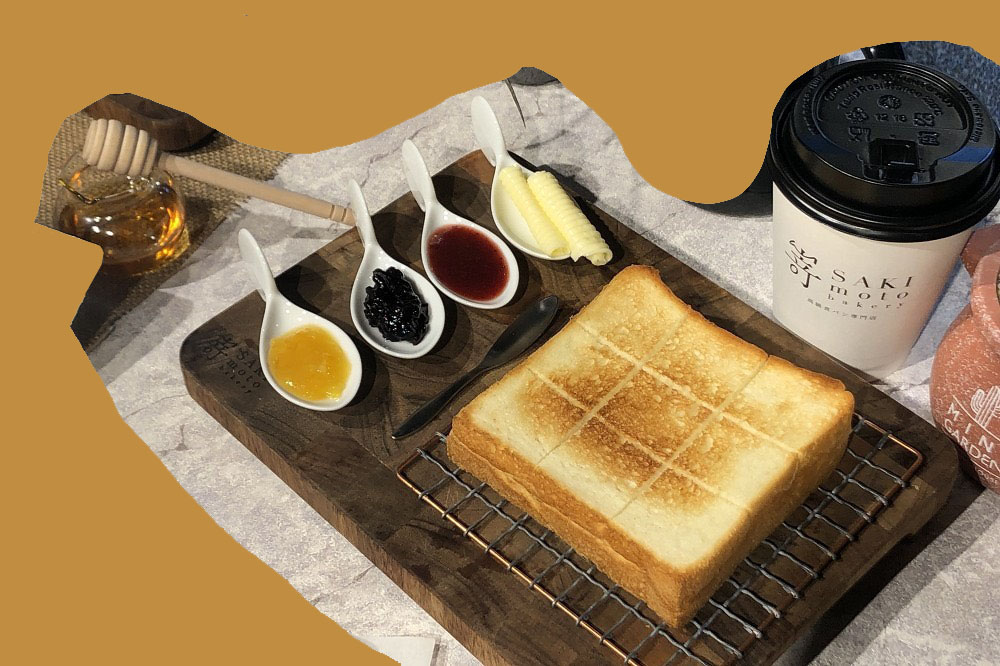

SAKImoto Bakery
Address / No. 16, Ln. 15, Sec. 5, Zhongxiao E. Rd., Xinyi Dist., Taipei City
Open from 10:00 to 20:00.
Online reservation is allowed.
Mumi Cafe is an Japanese style cafe, which is famous for soft white bread. When you order it, you can choose three special homemade jars with it, even the Hokkaido butter and the French butter is available.As the holder's daughter has milk allergy, the holder decided to invent a kind of toast that she can eat as she wants.He took two years dedicating to make people who have milk allergy can taste it, using better materials instead of usual milk and eggs.Eventually, this toast has named the top toast by Taiwanese people.
Location
